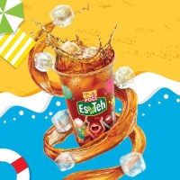
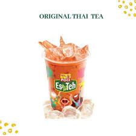
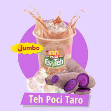

Jenis rasa es teh poci
Teh poci rasa original

Es teh poci original memiliki rasa segar dan kaya dari teh hitam
yang sedikit pahit, seimbang dengan manisnya gula. Ditambah es
batu, minuman ini memberikan sensasi dingin yang menyegarkan,
cocok dinikmati saat cuaca panas. Aromanya khas dan enak,
menjadikannya pilihan yang populer.
Harga: Rp5.000
Teh poci rasa thaithea

Thai tea (thaithea) memiliki rasa manis yang dominan, kaya dan
berempah, dengan sedikit kepahitan dari teh hitam. Sering
disajikan dengan susu kental manis atau santan, memberikan sensasi
krimi yang lembut. Kombinasi ini menciptakan rasa yang unik dan
sangat nikmat.
Harga: Rp 13.000
Teh poci rasa choco taro tea

Es teh poci taro menggabungkan rasa teh poci yang kaya dan sedikit
pahit dengan sentuhan manis dan creamy dari taro. Rasa taro
memberikan nuansa manis dan nutty, sementara teh menambah
kedalaman dan kehangatan. Kombinasi ini menciptakan minuman yang
menyegarkan dan unik, cocok untuk dinikmati dalam cuaca panas!
Harga: Rp 10.000
Teh poci rasa lemon honey

Es Teh Poci Lemon Honey adalah minuman yang memadukan rasa lemon
dan madu. Minuman ini dibuat dengan daun teh pilihan, irisan lemon
segar, dan madu asli. Es Teh Poci Lemon Honey merupakan salah satu
varian rasa Es Teh Poci yang menyegarkan dan menyehatkan.
Harga: Rp 19.000